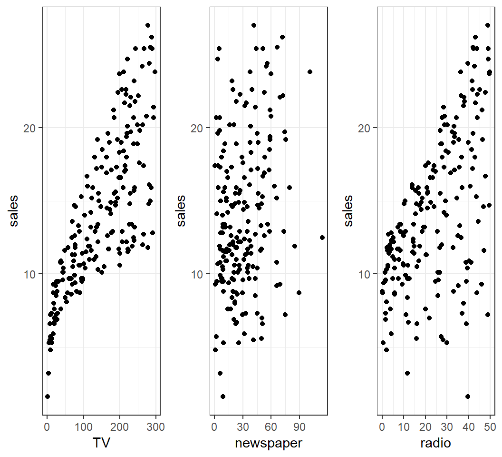
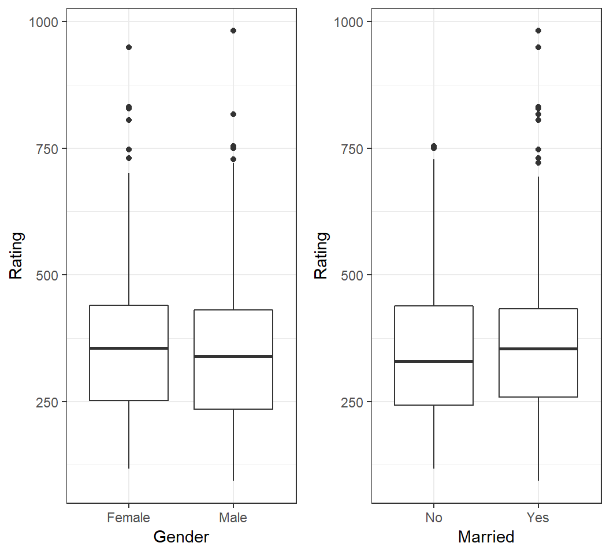
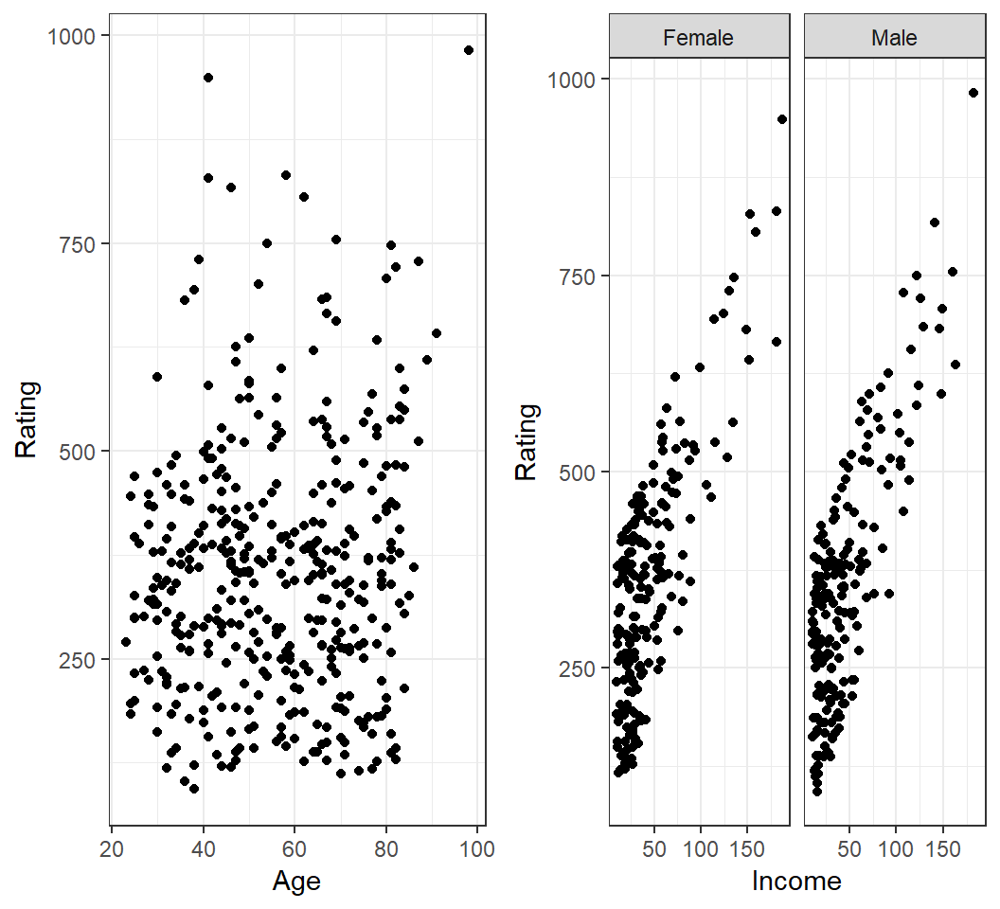
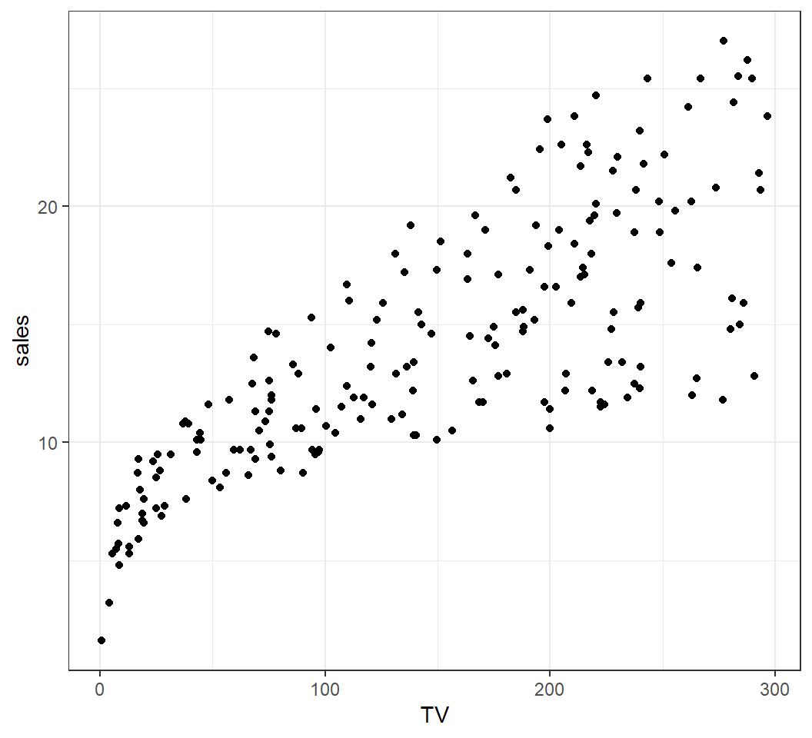
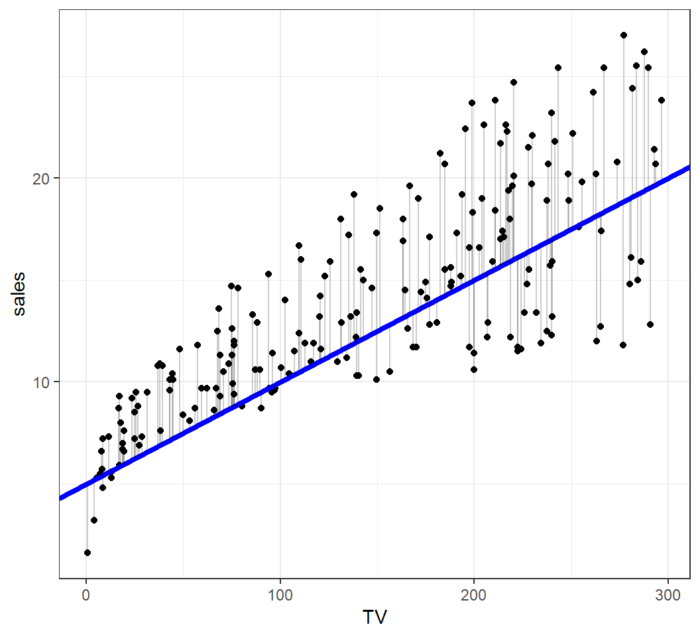
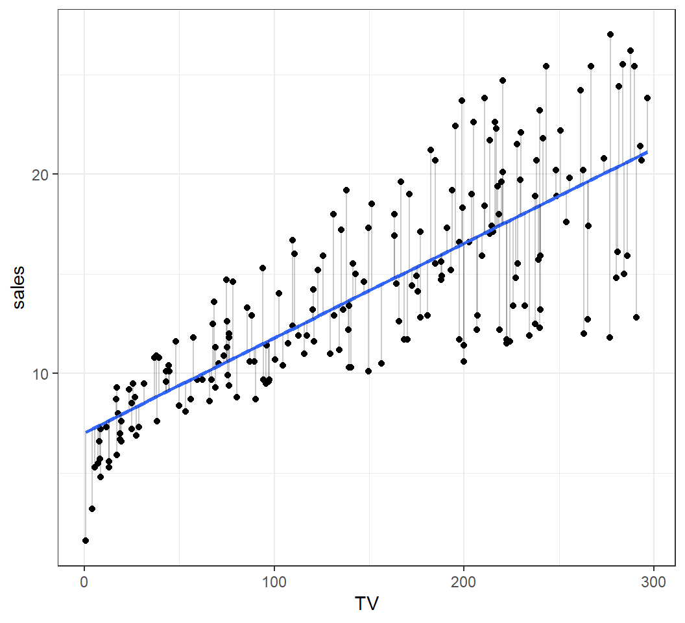
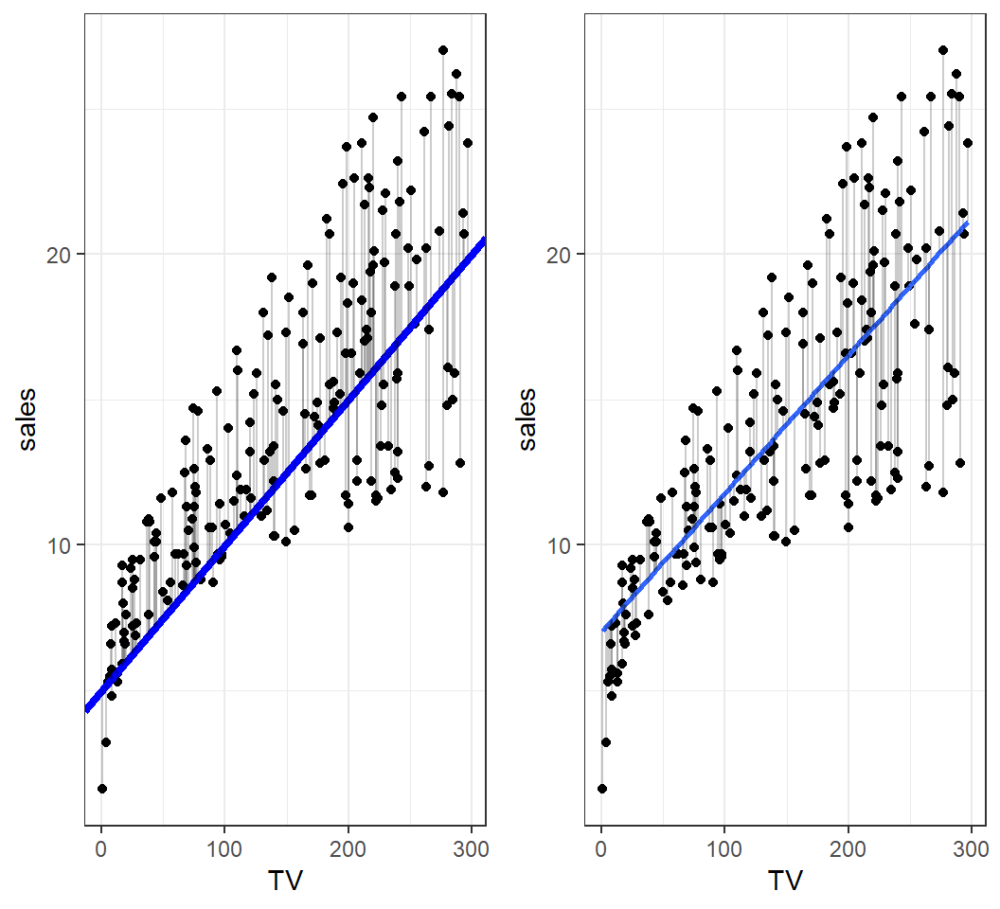
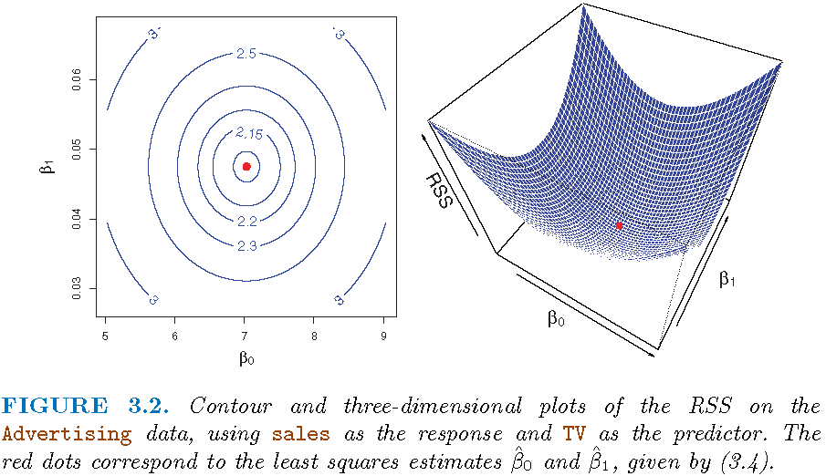

Stat 435 Lecture Notes 2
Xiongzhi Chen
Washington State University

Simple linear regression
Overview
Simple linear regression
- models the expectation of a random variable as a linear function of another random variable
- is perhaps the simplest (useful) model
For simple linear regression, we will cover its methodology, diagnostics and application.
Motivation: Example 1
How is
sales(in thousands of units) for a particular product related to advertising budgets (in thousands of dollars) forTV,radioornewspaper?How accurately can
salesamount be predicted by advertising budgets forTV,radioornewspaper?Is splitting advertising budgets for
radioandTVbetter than allocating it only toTV(orradio) in terms of increasingsalesamount?
Motivation: Example 1

Motivation: Example 2
How is
Balanceof credit card users related toGenderor marital status (Marriedor not)?How is
Balanceof credit card users related toAgeorIncome?Do users of different
Genderin a givenIncomerange have differentBalance?
Motivation: Example 2

Motivation: Example 2
How is Balance of a credit card user related to Age or Income? 
Intuitive Model
For the two motivating examples, simple linear models can be proposed as follows:
Sales\(\approx \beta_0\) + \(\beta_1 \times\)TVfor some constants \(\beta_0\) and \(\beta_1\)Balance\(\approx \beta_0\) + \(\beta_1 \times\)Incomefor some constants \(\beta_0\) and \(\beta_1\)Balance\(\approx \beta_{0,0}\) + \(\beta_{1,0} \times\)Incomefor some constants \(\beta_{0,0}\) and \(\beta_{1,0}\) ifGender=FemaleBalance\(\approx \beta_{0,1}\) + \(\beta_{1,1} \times\)Incomefor some constants \(\beta_{0,1}\) and \(\beta_{1,1}\) ifGender=Male
Model and interpretation
The model \[ \textsf{Sales} \approx \beta_0 + \beta_1 \times \textsf{TV}\] can be interpreated as \[E(Y) = \beta_0 + \beta_1 X\] with \(Y\)=Sales and \(X\)=TV.
Note: \(E(Y)\) is modelled as a linear function of \(X\).
Model and intepretation
The model \[\textsf{Balance} \approx \beta_{0,0} + \beta_{1,0} \times \textsf{Income} \quad \text{if} \quad \textsf{Gender=Female}\] can be interpreated as \[E(Y) = \beta_{0,0} + \beta_{1,0} X \quad \text{if} \quad X_1=0\] with \(Y\)=Balance and \(X\)=Income if \(X_1\)=Gender and \(X_1=0\), where Female is coded as \(0\).
Simple linear regression with a quantitative predictor
Summary
Simple linear regression with a quantitative predictor is used to model the mean of a quantitative random variable (called response variable) as a linear function of another quantitative random variable (called dependent variable).
True model
For two quantitative random varibles \(Y\) and \(X\), a simple linear model is \[E(Y) = \beta_0 + \beta_1 X,\] where \(\beta_0\) (intercept) and \(\beta_1\) (slope) are unknown, true model parameters (or coefficients), and \(\beta_1\) is called the regression coefficient.
The above model is equivalent to \[Y = \beta_0 + \beta_1 X + \varepsilon \quad \text{ with } \quad E(\varepsilon)=0,\] which is called the population regression line.
Discussion on model
Why a model \[Y = \beta_0^{\prime} + \beta_1^{\prime} X + \varepsilon^{\prime} \quad \text{ with } \quad E(\varepsilon^{\prime}) \ne 0\] can always be written into \[Y = \beta_0 + \beta_1 X + \varepsilon \quad \text{ with } \quad E(\varepsilon) = 0\] when \(\varepsilon\) is independent of \(X\)?
What does \(\varepsilon\) represent?
Intepretation
The model \[E(Y) = \beta_0 + \beta_1 X\] and its equivalent \[Y = \beta_0 + \beta_1 X + \varepsilon \quad \text{ with } \quad E(\varepsilon)=0\] postulate the following:
- The values of \(Y\) oscillate around the line \[l(X)=\beta_0 + \beta_1 X\] with “cancelling magnitudes”.
- For each unit change in \(X\), \(E(Y)\) changes \(\beta_1\) units, where the units for \(X\) and \(Y\) can be different.
- When \(X=0\), \(E(Y)=\beta_0\).
Estimated model
With observations \((x_i,y_i),i=1,\ldots,n\) for \((X,Y)\),
the model postulates \[y_i = \beta_0 + \beta_1 x_i + \varepsilon_i,\] where \(\varepsilon_i\) is an unobservable realization of \(\varepsilon\);
an estimated model is \[\hat{y}=\hat{\beta}_0 + \hat{\beta_1} x,\] where \(\left(\hat{\beta}_0,\hat{\beta}_1\right)\) is an estimate of \(({\beta}_0,{\beta}_1)\), and \(\left(\hat{\beta}_0,\hat{\beta}_1\right)\) is a function of the data \((x_i,y_i)\) for \(i=1,\ldots,n\).
Residuals
Based on an estimated model \(\hat{y} = \hat{\beta}_0 + \hat{\beta_1} x\),
- each \(y_i\) is estimated as \[\hat{y}_i = \hat{\beta}_0 + \hat{\beta_1} x_i\]
- each \(y_i\) has residual \(e_i = y_i- \hat{y}_i\)
- each \(e_i\) is an estimate of the unobservable \(\varepsilon_i\)
Note: Almost all information on \(\varepsilon\) is contained in the \(e_i\)’s.
Observations
- Let \(X\) =
TVand \(Y\)=sales - \(n=200\) observations \((x_i,y_i),i=1,\ldots,n\) for \((X,Y)\)
Check correlation:
> cor(adData$sales,adData$TV)
[1] 0.7822244Target: Estimate the model \(E(Y) = \beta_0 + \beta_1 X\).
Scatterplot
Scatterplot of \(X\)=TV and \(Y\)=sales:

An estimated model
An estimated model \(\hat{y} = 5 + 0.05 x\):

Methods of estimation
Since an estimate \(\left(\hat{\beta}_0,\hat{\beta}_1\right)\) is a function of the observations \((x_i,y_i)\) for \(i=1,\ldots,n\), there are infinitely many lines \[\hat{l}(X)=\hat{\beta}_0 + \hat{\beta}_1X\] with \(\hat{\beta}_0,\hat{\beta}_1 \in \mathbb{R}\) that can be used as an estimate of \(E(Y) = \beta_0 + \beta_1 X\).
Which line to should we use?
An optimal estimate
Estimate based on least squares \(\hat{y} = 7.03+0.047x\):

Comparison
An estimate and an optimal estimate:

Least squares (LS) method
Each fitted (or estimated) model \(\hat{y}=\hat{\beta}_0 + \hat{\beta}_1 x\) produces
- estimated \(y_i\) as \(\hat{y}_i=\hat{\beta}_0 + \hat{\beta}_1 x_i\)
- residual \(e_i = y_i- \hat{y}_i\)
So, we seek for \(\left(\hat{\beta}_0,\hat{\beta}_1\right)\) for which the corresponding residual sum of squares (RSS) \[\textsf{RSS}=\sum_{i=1}^n e_i^2=\sum_{i=1}^n \left[y_i - \left(\hat{\beta}_0 + \hat{\beta}_1 x_i\right)\right]^2\] is minimized. This is called the least squares method, and \(\left(\hat{\beta}_0,\hat{\beta}_1\right)\) the least squares estimate of \(\left({\beta}_0,{\beta}_1\right)\).
The least squares estimate
The LS method gives the least squares estimate (LSE):
\(\hat{\beta}_1 = \frac{\sum (x_i - \bar{x})(y_i - \bar{y})}{\sum (x_i - \bar{x})^2}\) with \(\bar{y}=n^{-1}\sum_{i=1}^n y_i\)
\(\hat{\beta}_0 = \bar{y} - \hat{\beta}_1 \bar{x}\) with \(\bar{x}=n^{-1}\sum_{i=1}^n x_i\)
Namely, the fitted model is \[\hat{y} = \hat{\beta}_0 + \hat{\beta}_1 x,\] also called the least squares line.
Note: “fitted model” is the same as “estimated model”.
RSS surface

License and session Information
> sessionInfo()
R version 3.5.0 (2018-04-23)
Platform: x86_64-w64-mingw32/x64 (64-bit)
Running under: Windows 10 x64 (build 19041)
Matrix products: default
locale:
[1] LC_COLLATE=English_United States.1252
[2] LC_CTYPE=English_United States.1252
[3] LC_MONETARY=English_United States.1252
[4] LC_NUMERIC=C
[5] LC_TIME=English_United States.1252
attached base packages:
[1] stats graphics grDevices utils datasets methods
[7] base
other attached packages:
[1] knitr_1.21
loaded via a namespace (and not attached):
[1] compiler_3.5.0 magrittr_1.5 tools_3.5.0
[4] htmltools_0.3.6 revealjs_0.9 yaml_2.2.0
[7] Rcpp_1.0.0 stringi_1.2.4 rmarkdown_1.11
[10] stringr_1.3.1 xfun_0.4 digest_0.6.18
[13] evaluate_0.12